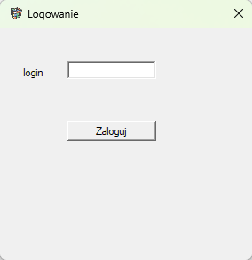
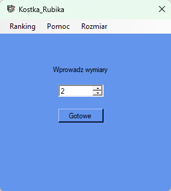
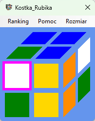
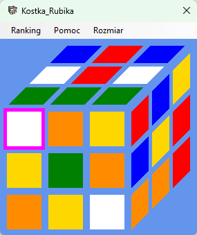
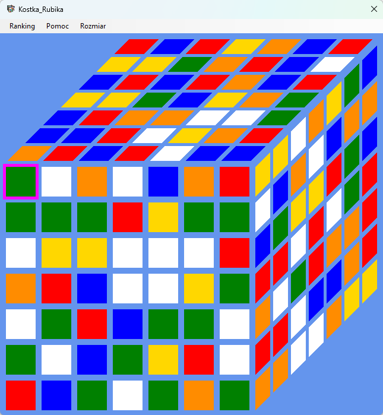
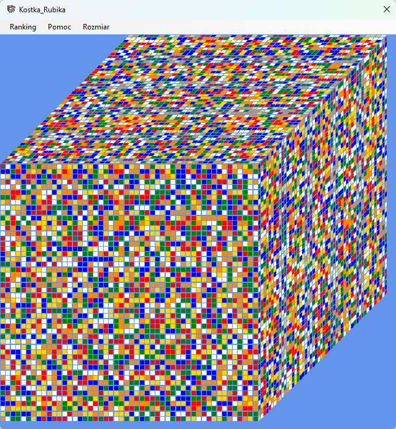
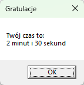
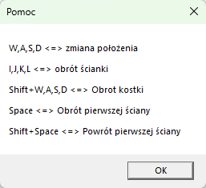

Program do układania kostki Rubika o dowolnym rozmiarze w Windows Forms
Praca była realizowana jako jednoosobowy projekt na zaliczenie podstaw informatyki
Z racji na programowanie obiektowe możliwa jest dynamiczna zmiana rozmiaru
Kostka jest generowana na zasadzie trój wymiarowej macierzy
Poniżej przedstawiony jest ekran logowania, ponieważ aplikacja początkowo posiadała opcje rejestracji. Z racji, iż baza danych znajdowała się w płatnej chmurze realizacja rejestracji została pominięta
Ekran logowania
Zmiana rozmiaru
Kostka 2x2
Kostka 3x3
Kostka 7x7
Kostka 50x50
Dodatkowo aplikacja gdy miała dostęp do chmury zapisywała czas w jakim została ułożona oraz pokazywała 3 najlepsze osoby.
W grze dostępna jest pomoc oraz zmiana rozmiaru w każdym momencie
Rozmiar kostki skaluje się z ekranem także na ile moc obliczeniowa komputera pozwoli powinna być możliwość wygenerowania naprawde dużej kostki